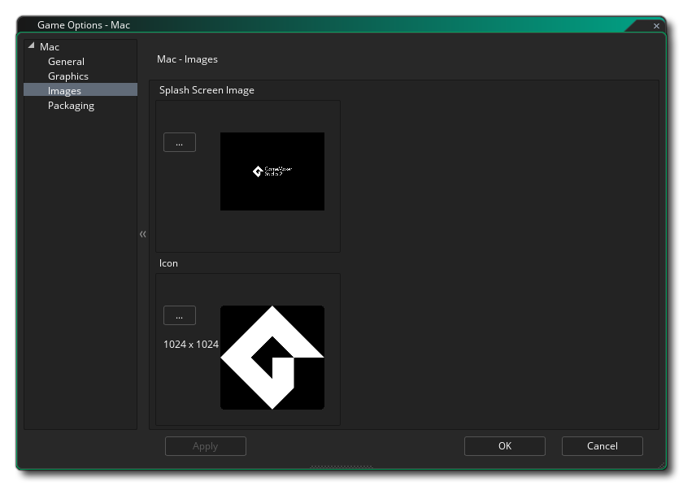

Cette section décrit les différentes options à votre disposition pour contrôler la compilation de vos projets de jeu Mac OS. Les différentes sections sont:
Dans la section Informations sur le produit, la première chose à faire est de renseigner le nom d'affichage de votre jeu, puis le numéro de version, l' identifiant de l' application, le fichier de sortie de l'application et les détails du copyright. La sortie de l'application correspond à l'emplacement auquel vos fichiers d'installation de jeu vont sur votre ordinateur de développement Mac. Lorsque vous créez votre .app.zip, ce fichier peut aller n’importe où (l’emplacement que vous spécifiez lors du dialogue de sauvegarde n’est pas la seule copie faite de celui-ci. .app.zip ), mais le .pkg et d’autres fichiers sont laissés dans ce dossier, ce qui vous permet de tester les installations locales via Terminal Server de manière à simuler les achats dans Mac Store, etc.
Vous devez également GameMaker ici l’ identifiant d’équipe que vous souhaitez utiliser pour signer l’application finale GameMaker par GameMaker Studio 2 pour vous. Si vous le définissez ici, l'ID de l'équipe que vous avez fourni dans les préférences macOS sera dépassé. Après l’identifiant d’équipe, vous avez également la possibilité de fournir l’ identifiant de signature, requis par Apple pour toutes les applications non-appstore (comme les jeux Steam, par exemple).
La dernière option est d'activer Steam dans votre jeu. Si vous activez cette option, assurez-vous que le kit de développement logiciel Steam fonctionne (voir ici ) et que vous avez ajouté l’ID d’application Steam dans les options générales du jeu.
Les options graphiques sont celles que vous devez configurer pour déterminer comment votre jeu utilisera la carte graphique de votre Mac cible. Les options suivantes sont incluses pour que vous puissiez les modifier:
- Autoriser le menu et le dock en plein écran: Lorsque cette case est cochée, le menu du système d'exploitation et le dock sont affichés si le jeu est en mode plein écran. Ceci est désactivé par défaut.
- Display Cursor (Afficher le curseur): lorsque cette option est cochée, le curseur Mac OS normal s’affiche. Si vous cochez cette case, aucun curseur ne s’affiche à moins d’avoir créé un curseur dans votre code de jeu. Ceci est désactivé par défaut.
- Démarrer en plein écran: Si cette case est cochée, le jeu démarrera en mode plein écran, sinon la fenêtre s’ouvrira. Ceci est désactivé par défaut.
- Autoriser le basculement en plein écran: cochez cette case pour permettre à l'utilisateur de passer du mode plein écran au mode fenêtré et inversement à l'aide des raccourcis Mac OS standard. Ceci est désactivé par défaut.
- Interpoler les couleurs entre les pixels: active l'interpolation, qui "lisse" les pixels. Pour les graphismes nets en pixels, il devrait être désactivé, mais si vous avez de beaux mélanges d’alpha et des graphiques lissés, il est préférable de le laisser activé. C’est désactivé par défaut.
- Utilisez la synchronisation pour éviter de vous déchirer: Ceci active ou désactive v-sync (v-sync est utilisé pour synchroniser la vitesse de mise à jour de votre jeu avec le taux de rafraîchissement du moniteur). Notez que si vous jouez avec une vitesse de pièce de 120 et que le joueur dispose d'un moniteur avec un taux de rafraîchissement de 60, l'activation de cette option bloquera également votre vitesse de jeu à 60. Ceci est désactivé par défaut.
- Autoriser le redimensionnement de la fenêtre: cette option permet à l'utilisateur de modifier la taille de la fenêtre de jeu (l'option Fenêtre sans bordure doit être désactivée pour que cela fonctionne). Cette option est désactivée par défaut.
- Activer la rétine: Cochez cette case pour définir la mémoire tampon de retour à la résolution la plus élevée (réelle) lorsque le jeu est exécuté sur un moniteur compatible avec la rétine. Le décocher permet de définir la mémoire tampon de manière à obtenir la résolution apparente (la plus basse). Cela signifie que la fenêtre de jeu initiale sera définie sur deux fois la largeur et la hauteur du port de la salle / vue sur lequel est définie la première salle. Toutefois, cela n’adapte PAS la surface d’application à votre guise. Par conséquent, si vous souhaitez que votre jeu tire le meilleur parti de l’affichage de la rétine, vous devez également définir la surface de l’application sur la même taille que la fenêtre (notez que cela doublera le nombre de pixels. Activez cette option et redimensionnez la surface d’application si votre jeu bénéficie de la résolution accrue). Cette option est désactivée par défaut.
- Mise à l'échelle: Ici, vous pouvez choisir de conserver le rapport hauteur / largeur (afin qu'une pièce 4: 3 soit encadrée sur 16: 9) ou de la redimensionner complètement (en étirant l'image pour l'adapter à tout l'écran).
ATTENTION! La désactivation de la surface de l’application désactivera toutes les options de mise à l’échelle définies dans les options de jeu Mac jusqu’à ce qu’elle soit réactivée. Voir La surface d'application pour plus de détails.Enfin, il est possible de définir la taille de la page de texture. La taille par défaut (et la plus compatible) est 2048x2048, mais vous pouvez choisir entre 256x256 et 8192x8192! Il existe également un bouton intitulé Afficher qui générera les pages de texture pour cette plate-forme, puis ouvrira une fenêtre afin que vous puissiez voir à quoi elles ressemblent. Cela peut être très utile si vous souhaitez voir comment les pages de texture sont structurées et éviter d’avoir des pages de texture plus grandes (ou plus petites) que nécessaire.
REMARQUE: Sachez que plus la taille de la page de texture est grande, moins votre jeu sera compatible sur les Mac dont les spécifications sont moins strictes.

La section images est l'endroit où vous fournissez les images nécessaires à votre jeu. Pour Mac, vous devez fournir un fichier d’icône (qui doit être au format .png format et 1024x1024px) et aussi un écran de démarrage (qui peut être .png, .bmp, .jpg ou .gif format). L'écran de démarrage sera affiché pendant le chargement du jeu.
Si vous souhaitez que le jeu final soit prêt pour l' App Store, vous devez cocher l'option Construire pour le Mac App Store, mais sachez que cela ne fonctionnera que si vous êtes un développeur inscrit et disposez des certificats nécessaires. Sous ce sont les autorisations de l'application que vous devez uniquement vérifier si elles sont vraies car Apple peut rejeter votre application si elles sont vérifiées lorsqu'elles ne sont pas nécessaires ou vice-versa. Ces options permettent simplement à votre jeu d’utiliser le http_ et url_ les fonctions. Il est à noter que si vous souhaitez prendre en charge les GamePads dans votre jeu, l'option de création d'un package prêt pour App Store doit être désactivée.
Enfin, vous devez sélectionner sa catégorie d'application (pour plus d'informations, voir ici ).
Il est à noter que GameMaker Studio 2 dispose d'un outil Project Image Generator qui permet de créer automatiquement toutes les images requises pour les différentes plates-formes cibles pour lesquelles votre jeu est compilé. Si vous utilisez cet outil, vous devez réviser les images créées pour vous assurer qu’elles correspondent à vos besoins.